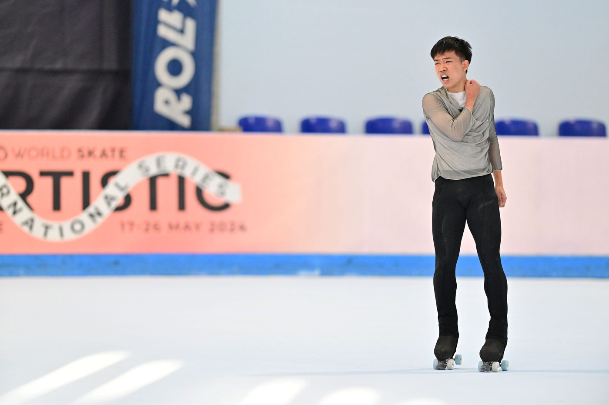
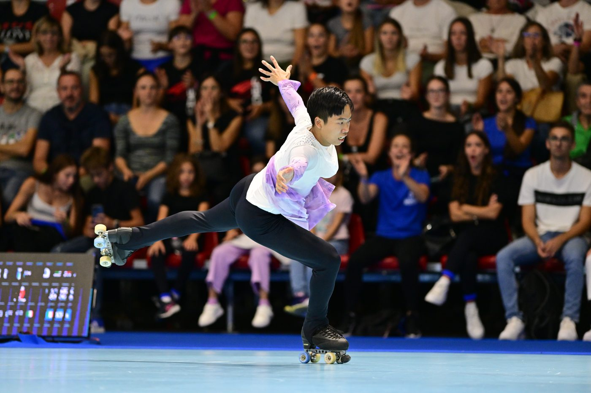
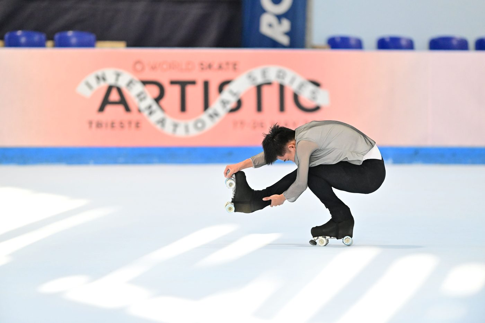
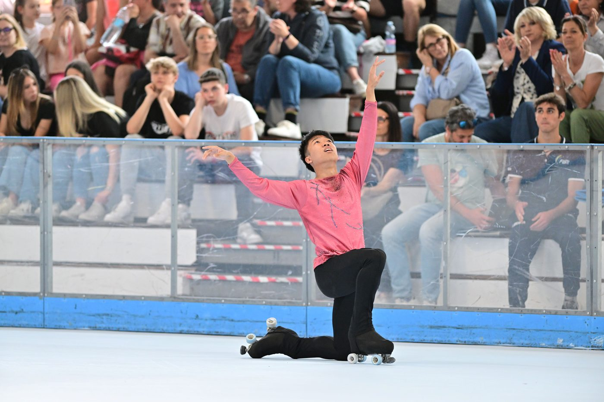

01我的故事
持續挑戰與突破自我
從五歲第一次穿上滑輪溜冰鞋、踏上溜冰場的那一刻起，我便展開了自己的滑輪逐夢之旅。小學五年級開始接受具國際花式教練認證的簡佳聖教練系統化的選手訓練。高中時，入選國家代表隊，在2018年亞錦賽青年組奪得銀牌，並於2019年世界錦標賽拿下青年組第十一名，這是我生涯中重要的里程碑。
邁入成年組後，挑戰變得更加嚴峻。在世界盃成年男子組比賽中，3圈跳已成基本標配，而3圈組合跳則幾乎是進入世界前十的門檻。2024年在義大利世錦賽中，我作為台灣成年男子組唯一國家代表選手，面對高手雲集、壓力巨大的比賽環境，努力挑戰自我，展現經過近五年訓練才突破的高難度動作—Triple Flip。成功完賽瞬間，我那一聲奮力的吼叫，釋放了我內心交織的複雜情緒，也更加確信自己對滑輪溜冰的熱愛與執著。享受賽場上的每一刻，每場比賽都是累積經驗的寶貴機會，不僅促進技術進步，更讓我在心態和自信上不斷成長。
學業與訓練並進，拓展國際視野
除了在溜冰場上不斷挑戰自我，我同樣重視學術成長。目前就讀於國立清華大學工學院學士班，主修動力機械與運動科學雙專長，去年開始更作為獎助生被聘入中研院資訊科學研究所，研究機器學習應用在溜冰及其他運動領域的可能性。這段學習過程幫助我把科學數據應用到滑輪溜冰的技術分析上。我努力平衡課業與高強度訓練，即便常感覺時間不夠用，但對科學知識與滑輪溜冰的熱情讓我能持續前進。”兼持”這部影片，記錄了我如何平衡學業與運動，於中華民國大專院校體育總會舉辦的「運動一瞬間」競賽中榮獲運動生活組金獎。
除了專注於滑輪溜冰技術，我也規律進行重量訓練以強化身體素質，並透過舞蹈和肢體訓練提升動作流暢度與藝術表達力。寒暑假期間，我前往義大利和澳洲進行移地訓練，接受世界級教練的專業指導，至今累積了九次國際訓練經驗。近年也與日本教練及義大利教練合作，編排與指導比賽曲目，讓我的藝術表現更具層次與感染力。平時我也經常透過社群與來自美國、日本、西班牙、義大利、澳洲等地的頂尖選手交流，學習不同文化與訓練方法，拓展國際視野。此外，鑽研國際比賽規則與最新趨勢，幫助我在比賽中靈活運用策略，持續提升競技表現。
期許自己成為具有正面影響力的運動員
花式滑輪溜冰不僅是一項競技運動，更是一段不斷挑戰自我、堅持努力、持續成長的旅程。教會我如何面對失敗、接受挫折，調整心態，並從不斷嘗試中找到進步的方向。我期待未來能獲得更多企業與社會的支持，投入國際賽事與專業訓練，為台灣滑輪溜冰在世界舞台上創造更多亮眼成績，為台灣爭光，也希望能成為具有正面影響力的運動員，透過自身經歷激勵更多年輕人勇敢嘗試，突破自我。



